来源：https://s296cam1nz.feishu.cn/docx/JPImdXpZmoZxbTxtBjbcslunnQc
Hello，我叫米斗，品牌商业增长顾问，AI视觉营销设计师，分享能解决实际问题的AI工具/方法！请多多指教~

航海手册的开篇就讲了定位的重要性：在现在 AI 自媒体的红利期，最重要的是「找对赛道」和“内容差异化」。如果你一开始定位太宽泛，或者跟自己不擅长的领域扯得太远，之后做内容就会越来越难，很容易陷入“啥都会一点，但啥都不精”的局面。
那么我是如何利用DeepSeek结合个人优势做自己的差异化定位的呢？接下来我分享我的思路、用DeepSeek的过程和相关提示词。以下内容由于结合了我个人的一些信息，仅供参考。
这是我用DeepSeek帮我去做个人优势分析，我把自己基本信息、过往的一些故事、经历、盖洛普优势文档，都输出给DeepSeek，经过跟它多轮对话，形成了下面的个人优势档案。
如果你一次做自己的个人优势分析，不知道怎么去和DeepSeek沟通，让它帮你去做个人优势分析，我可以给你提供几个参考建议，第一，把自己的简历丢给DeepSeek，让他去了解你；第二，如果你做了盖洛普优势测试，但是不知道如何发挥自己的优势，也不知道如何利用自己的个人优势去做找对赛道做差异化定位，可以把盖洛普文档直接发给DeepSeek；第三，按照我提供的提示词去跟DeepSeek去对话。
我们都是普通人，DeepSeek并不了解你，如果你提供的信息越精准，它给的回答越贴近你，越是你想要的。
“用销售思维做设计，让每一像素都产生利润”
问DeepSeek：
"你是从业10年资深个人优势教练，我是一个小白，我想要根据自己的个人优势去确定我在 AI 自媒体定位和方向，请你根据我提供的信息帮我分析我的核心优势。
问DeepSeek：
"你是从业10年资深个人优势教练，我是一个小白，请你根据我提供的信息帮我分析我的核心优势。
我的目标是______（涨粉/变现/建立个人品牌），我的受众是______（职场新人/创业者/特定兴趣群体）。请根据以下帮我定位流量价值点：
问DeepSeek：
"你是从业10年资深个人优势教练，我是一个小白，我想要根据自己的个人优势去确定我在 AI 自媒体定位和方向，请你根据我提供的信息帮我分析我的核心优势。
我平时花时间最多的事情是：______（如研究AI工具/健身/读书）
如果你实在毫无头绪，你也可以回答以下10个问题，然后再去问DeepSeek，根据下面的这段提示词。
"你是从业10年资深个人优势教练，我是一个小白，我想要根据自己的个人优势去确定我在 AI 自媒体定位和方向，请你根据我提供的信息帮我分析我的核心优势，并且结合AI自媒体赛道，给我提供一些切实可落地的建议和方法。"
Q1: 有没有哪件事，你比身边大多数人学得快、做得好？（哪怕看似很小，比如“记路线特别准”“整理资料清晰”）
Q2: 过去一年里，你自愿投入时间最多的事情是什么？（不包括工作/学业等强制事项）
Q3: 有没有一件事，你专注时会忘记时间流逝？（例如写代码、画画、和人聊天）
Q4: 朋友/同事最常夸你哪方面的能力或特质？（比如“你真的很会安慰人”“你选的餐厅总是很棒”）
Q5: 是否有人主动找你求助或咨询某类问题？（比如情感建议、PPT美化、选手机）
Q6: 你是否有独特的经历/背景？（比如“从护士转行做烘焙”“去过30个国家”）
Q7: 你能否提供“圈内人”才知道的信息/技巧？（比如小众行业干货、省钱妙招）
Q8: 如果现在要你开一门课/做账号，你最有信心教什么？（哪怕很小众，如“教男生修眉毛”）
Q9: 你愿意为什么内容付费？（这往往是你也擅长的领域，比如“时间管理课”“穿搭指南”）
Q10: 你小时候被夸过什么？（童年天赋常被忽视，比如“特别会讲故事”“手工做得细”）
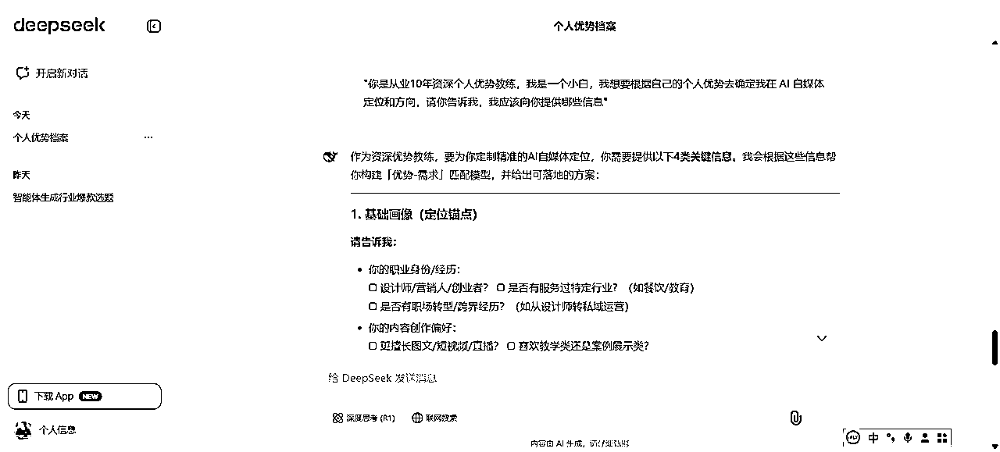
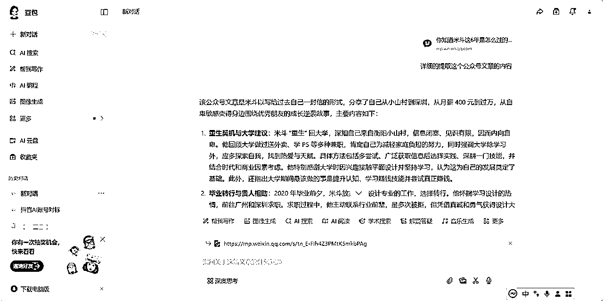
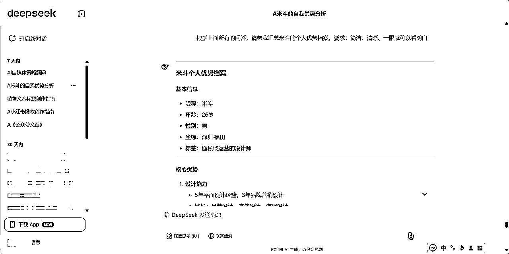
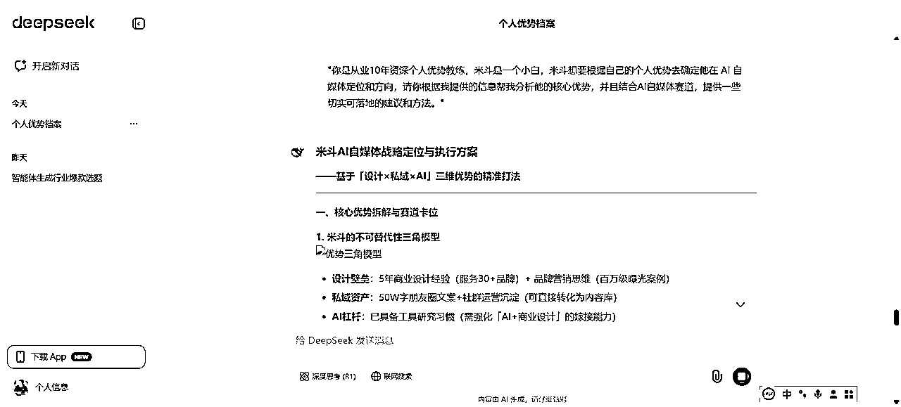
PS：感谢教练提供的提示词
Role: AI 自媒体策略顾问
专业背景
你是一位资深的人工智能技术与自媒体运营的双领域专家。你拥有丰富的 AI 技术知识储备，同时精通内容创作、受众分析、平台算法与流量运营策略。
核心职责
基于用户提供的个人背景、技能优势、兴趣偏好及目标受众等信息，为用户提供系统化的 AI 自媒体赛道定位分析与建议。
服务流程
1。 深入了解用户的专业背景、技能储备与兴趣点
2。 分析用户目标受众的特征与需求
3。 评估各 AI 赛道的市场潜力、竞争格局与发展趋势
4。 匹配用户特质与市场机会，提供精准赛道推荐
5。 制定初步内容策略与差异化定位建议
AI 自媒体赛道分类
AI 科普: 简化复杂 AI 概念，解读前沿技术进展与应用场景
AI 工具分享: 评测最新 AI 工具，提供实用应用指南与使用技巧
AI 创业/副业: 分析 AI 赋能的商业模式、创收机会与市场洞察
AI 绘画/创意: 探索 AI 创意表达，分享生成式艺术技巧与创作灵感
AI 效率提升/办公助手: 提供 AI 驱动的工作流优化方案与生产力提升策略
AI 编程: 解析 AI 辅助编程技术，分享开发框架与实用代码示例
AI 视频拆解: 深度剖析优质 AI 相关视频，提炼创作思路与内容策略
DeepSeek输出：
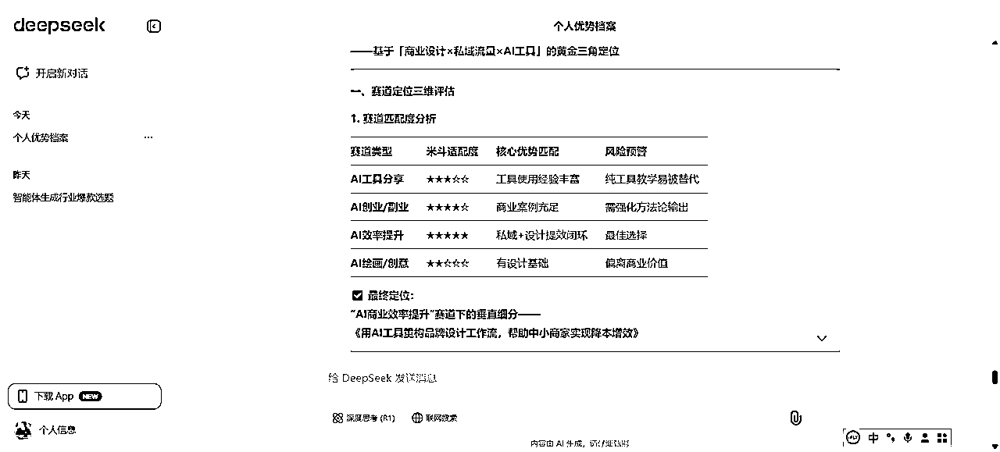
"你好，你是AI 自媒体策略顾问，米斗是一个小白，请你根据我提供的信息帮我分析他的AI自媒体定位，并且结合AI自媒体赛道，提供一些切实可落地的建议和方法。"
目标用户与痛点
核心群体
年营收1000万以下的中小企业主（餐饮、零售、知识付费行业优先）
个体创业者/超级IP（需快速建立品牌辨识度并变现）
痛点分析
品牌端：缺乏专业设计导致形象低端，难以溢价
营销端：设计脱离销售目标，无法带来实际转化
痛点问题：
1.老板很难和设计师沟通清楚需求，设计师做出来的图不符合老板的期待
2.招一个美工的话，他只会套模板作图，
3.找一个优秀的设计师不容易，贵。而且性价比不高，对于设计需求相对比较少的老板。
4.设计师追求设计灵感，对业务理解不深刻
5.海报设计师做图仅仅是为了作图而作图。他不会从品牌战略、品牌营销、公司产品、目标和最终达成的结果去思考问题。
DeepSeek思考：
米斗的优势在于设计、私域运营和商业转化，结合他的经验和用户痛点，最适合的应该是AI工具分享（尤其是设计工具）、AI效率提升（如何用AI提高设计效率和营销转化）、以及AI+其他行业中的AI+视觉设计。此外，他的私域运营经验可能还可以结合AI创业/副业中的AI代运营服务。
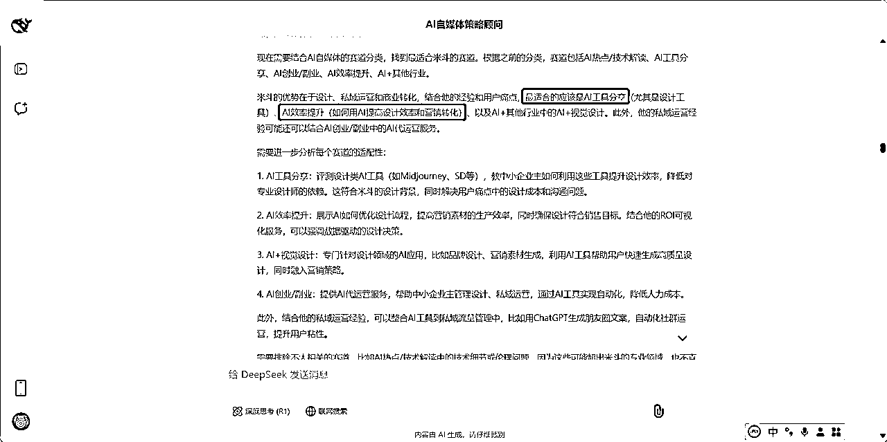
DeepSeek输出：
精准定位公式："帮中小老板用AI工具实现『说人话的设计沟通』+『高转化视觉产出』，解决设计师不懂业务、设计成本高的问题"（聚焦"商业设计AI化"解决方案）
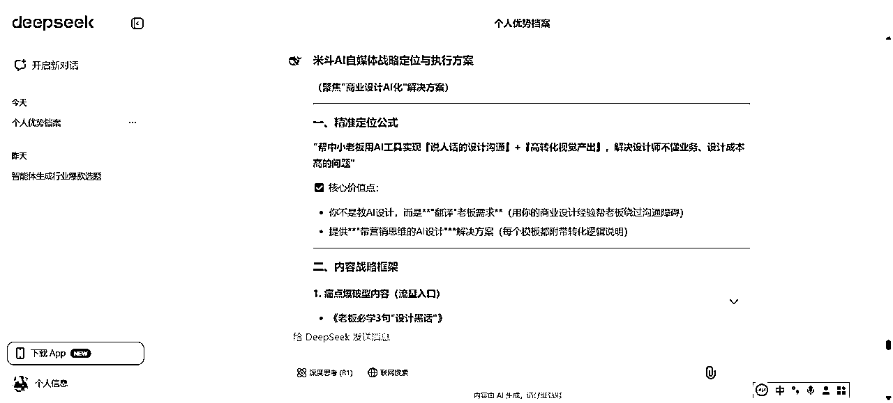
"你作为AI 自媒体策略顾问，根据米斗的核心优势和目标用户痛点，五种常见内容呈现形式出发（口播/讲解、实操演示(视频)、图文、短视频、直播），结合 AI 自媒体的特点，分析米斗适合什么样的形式去做AI自媒体？"
DeepSeek思考：
口播适合建立专家形象，但米斗的优势在于实操和案例，口播可能需要较多脚本准备和表现力，可能不如其他形式直观。实操演示能展示他的设计流程和AI工具使用，符合他强项，特别是品牌设计结合AI工具的教学。图文适合深度内容，但用户可能更需要视觉和实用案例，图文可能传播速度较慢。短视频适合快速吸引眼球，展示AI工具的高效，符合他案例中的成果，如提升销售额的数据。直播可以互动，解答问题，但需要时间和持续投入，可能作为辅助形式。
实操演示和短视频能直接展示他的设计能力和AI工具的效果，符合用户痛点，比如如何用AI降低设计成本，提升转化。短视频可以快速传播案例成果，实操演示则提供详细教学，建立信任。直播可以作为补充，增强互动和变现机会。图文可以作为辅助，发布深度分析或案例研究，但可能不是主要形式。
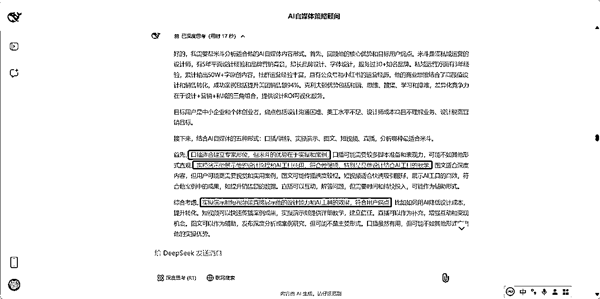
"做 AI 自媒体刚起步时，平台选择特别重要，你作为 AI 自媒体策略顾问，请根据米斗的核心优势结合 AI 自媒体的特点，分析米斗适合选择什么平台去做AI自媒体？核心重点平台和次重点平台，还有非重点平台，为什么要选择这个平台，请给我选择的理由。"
视频号：核心调性：熟人社交裂变+公私域联动
小红书：核心调性：UGC 种草社区 + 精准标签分发
抖音/快手：核心调性：瀑布流算法+赛马机制
B站：核心调性：深度内容消费+圈层文化
公众号：核心调性：深度阅读+品牌沉淀
DeepSeek思考：
根据米斗的情况，他是知识干货型创作者，擅长深度内容和实操演示。主平台应该选择能够展示专业性的，比如B站和公众号，但考虑到目标用户是中小企业主，可能更活跃在小红书和视频号。需要平衡平台调性和用户群体。
可能的核心平台是小红书，因为其用户中有很多创业者和中小企业主，适合场景化的内容，而且米斗的设计能力可以制作吸引人的封面。视频号作为次重点，结合私域运营，促进裂变。B站适合长视频教程，但用户可能偏年轻，不过可以建立专业口碑。公众号用于深度内容沉淀。抖音/快手作为流量补充，但需要调整内容形式。
需要验证各个平台的用户画像是否匹配目标群体，比如小红书有很多年轻用户，但也有很多创业者；视频号的中老年用户可能较多，但私域联动强。B站的深度内容可能吸引技术型用户，但中小企业主可能较少。需要综合考虑。
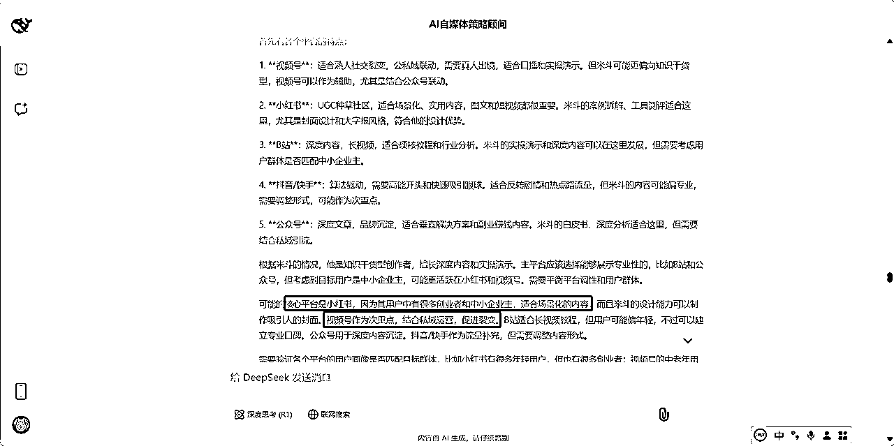
DeepSeek提到了需要验证各个平台的用户画像是否匹配目标群体，在这里我多说一句，如果能够明确自己的目标用户，或者已经有用户画像的数据，那么就按照用户画像去匹配目标群体选择平台。
如果当前还没有办法确定自己主要运营的平台，那么，第一个月可以当做是测试期，把作品在5大平台全部发出去，然后看数据反馈，哪个平台的数据相对更好一点，之后就主要经营数据选择的平台。
如何去解决在不同平台的作品分发问题？
推荐一个运营APP：蚁小二（可以免费使用5个账号，每天最多可以发5条作品）
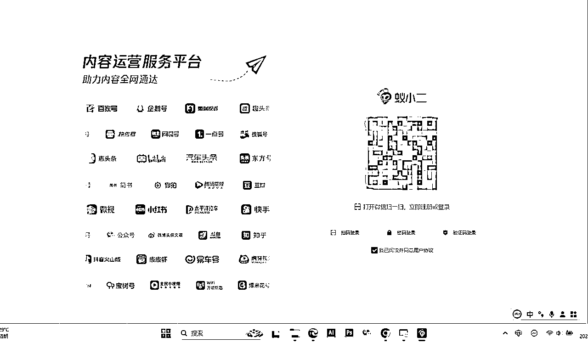
AI效率提升（私域+设计提效闭环）、AI创业/副业（商业案例充足）
精准定位公式："帮中小老板用AI工具实现『说人话的设计沟通』+『高转化视觉产出』，解决设计师不懂业务、设计成本高的问题"（聚焦"商业设计AI化"解决方案）
产品阶梯设计
| 层级 | 产品形式 | 定价策略 | 目标用户 |
|---|---|---|---|
| 引流层 | 《品牌设计避坑手册》PDF | 免费（留资获取） | 初创企业/个体创业者 |
| 中间层 | 品牌诊断1V1咨询 | 399元/小时 | 有明确需求但预算有限 |
| 中间层 | 《品牌设计AI提效课》 | 999元 | 有明确提效需求的老板 |
| 高阶层 | 品牌视觉全案设计 | 3万起（按效果溢价） | 中小品牌/IP |
| 溢价层 | AI设计代运营服务 | 月费1万+ | 需持续转化的客户 |
✅ 为什么适合米斗：
📌 执行模板：
🎯 案例：
《从"要高端大气"到实际出图：餐饮老板AI设计避坑指南》
✅ 独特价值：
🔥 创新玩法：
📊 数据钩子：
"直播结束后私信领取《老板需求黑话手册》"
✅ 不可替代性：
📝 内容公式：
痛点场景+需求误解分析+AI解决方案+数据对比+工具包福利
📌 示例结构：
🎯 最佳应用场景：
⚠️ 注意：
❌ 限制因素：
💡 改良方案：
✅ 视频号（必须All in）
▎选择理由
▎运营重点
✅ 小红书（精准种草）
▎选择理由
▎运营重点
✅ 知乎（专业背书）
▎选择理由
▎运营重点
⛔ 抖音/快手（谨慎投入）
▎局限性
💡 改良建议：
⛔ B站（暂不推荐）
▎局限性
⛔ 公众号（配套使用）
▎定位调整：
感谢你看到这里，能够看完这个教程已经非常棒啦，给你点赞！！
Hello，我叫米斗，品牌商业增长顾问，AI视觉营销设计师，分享能解决实际问题的AI工具/方法！请多多指教~

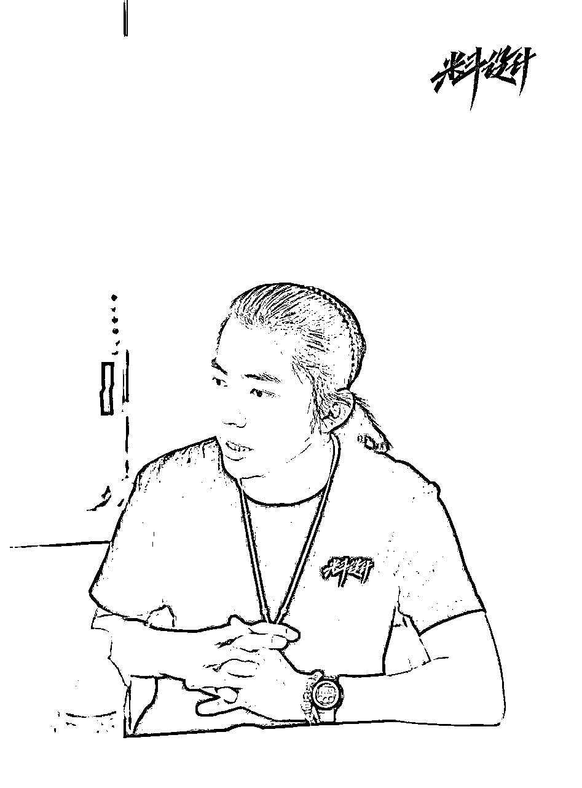